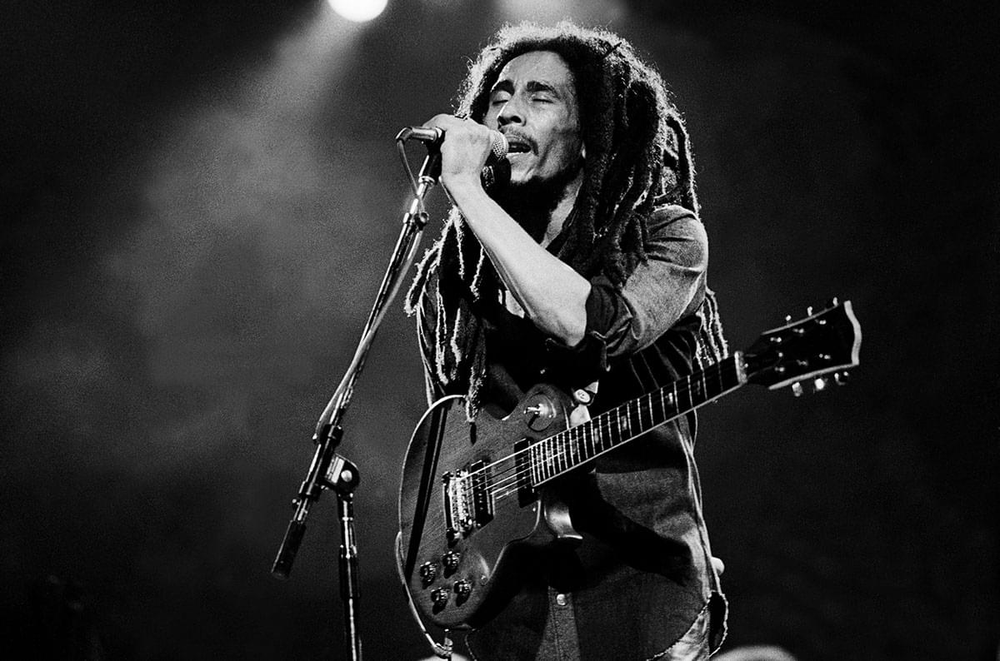

The short but productive life of Jamaica's most famous musical
son:
February 6 1945: Robert Nesta Marley is born in
Nine Miles, St Ann's, Jamaica, the son of a middle-aged white
British naval officer and teenage Jamaican mother.
1962: Records his first song in Kingston, Judge
Not, recorded by legendary reggae producer Leslie Kong.
1963: He forms the original Wailers - then
known as the Teenagers - with Peter Tosh, Bunny Livingstone,
Junior Braithwaite, Beverley Kelso and Cherry Smith.
1963 - 1966: The band, who change their name to
Bob Marley and the Wailers, record over 70 songs for producer
Coxsone Dodd, including many tracks Marley would re-record to
international acclaim in the 1970s.
1966: Marley marries soul singer Rita Anderson,
a member of The Soulettes and later the I-Threes, with whom he
will have five children. Shortly after marrying, he moves to the
US to work in a factory.
1969-71: The band record with noted Jamaican
producer Lee "Scratch" Perry. This period includes many classic
tracks such as Small Axe, My Cup and Sun is Shining.
1971: Marley forms his own record label, Tuff
Gong.
1973: Bob Marley and the Wailers sign to Chris
Blackwell's Island Records. They release the album Catch a Fire,
the first to make a major impression in music markets outside
the Caribbean. Livingston and Tosh, however, leave the band to
embark on solo careers.
1974: Eric Clapton covers The Wailers' I Shot
the Sheriff and takes it into the UK top 10, further adding to
their reputation.
1975: The band release the seminal album Natty
Dread, which contains their landmark song No Woman, No Cry.
Marley becomes a star all over the globe.
December 3, 1976: Marley and wife Rita are
injured in an assassination attempt in Jamaica. Days later, he
takes to the stage with his arm in a sling.
July 1977: Marley breaks one of the toes on his
right foot in a football accident in Paris. Doctors find
cancerous cells and remove them.
1978: He holds the One Love Peace Concert in
Kingston, bringing the leaders of Jamaica's rival political
factions to the stage to shake hands.
1980: Marley and The Wailers kick off the year
with a concert in the newly-independent African nation of
Zimbabwe. Later in the year, while jogging in New York's Central
Park, Marley collapses. Doctors discover cancer has spread to
his lungs, liver and brain.
May 11, 1981: Marley dies in hospital in the
US, aged 36.
May 1986: The Marley Museum is opened in
Kingston, on the site of his former home.
1990: Marley's birthday is declared a national
holiday in Jamaica.
1994: Bob Marley is posthumously admitted into
the Rock and Roll Hall of Fame.

Bob Marley performs onstage at the Auditorium Theater in Chicago
on May 27, 1978.
“Love the life you live. Live the life you love.” --Bob Marley
To learn more about Bob Marley, see his page at
WIKIPEDIA